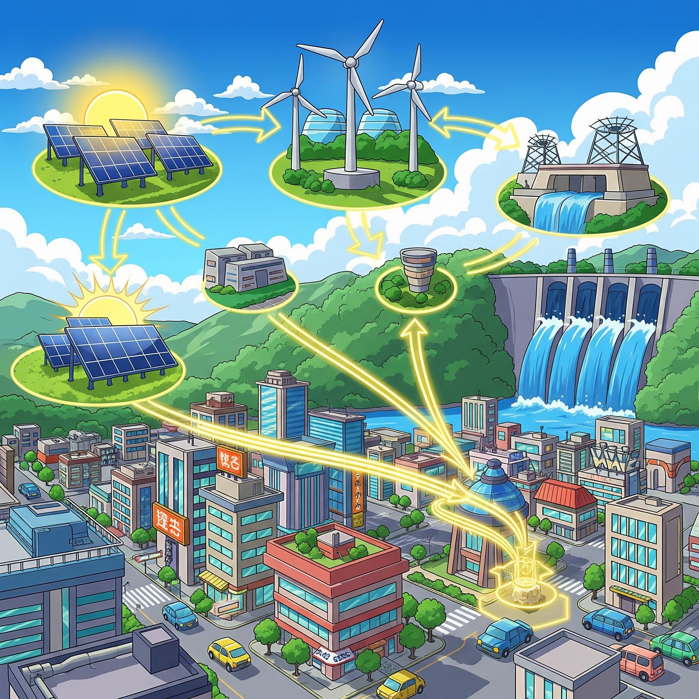
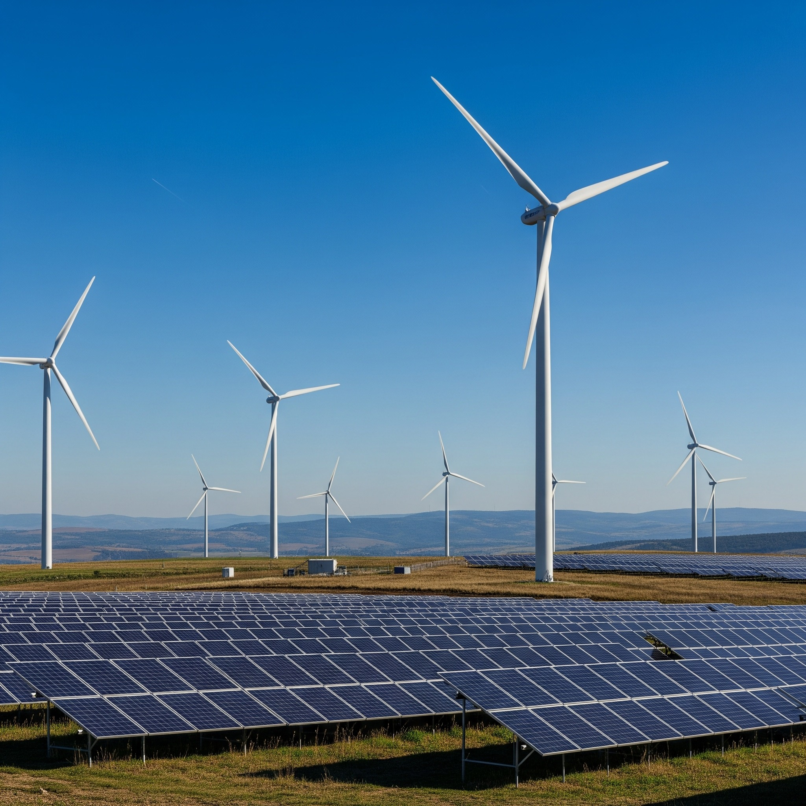

エネルギー機械コースってどんなところ？
私たちの快適な暮らしを支える「エネルギー」と、それを生み出し、効率よく利用するための「機械」について深く探求するコースです。 例えば、毎日使う電気がどうやって皆さんの家に届くのか、自動車や飛行機はどんな仕組みで動いているのか、 そして未来の地球に優しいエネルギーはどうやって生まれるのか—そんな疑問を、実験や実習を通して解決していきます。 大阪公立大学工業高等専門学校のエネルギー機械コースでは、より良い暮らしと環境との共生を目指し、持続可能な社会に貢献できる技術者を育成しています。
エネルギー機械コースで学べること
エネルギー機械コースでは、私たちの生活と地球の未来に深く関わる、以下のような専門的な分野を学びます。
- 輸送機械と産業インフラの技術： 自動車や飛行機、船などの輸送機械や、発電所のような大規模な産業インフラの設計・運転方法について学びます。 また、機械が持つ力を最大限に引き出すための知識も身につけます。
- クリーンエネルギーの創生と貯蔵： 太陽光、風力、水力といった再生可能エネルギーだけでなく、水素エネルギーなど、地球にやさしい次世代エネルギーについて学びます。 「どうやって作るか」「どうやって効率よく貯めるか」といった視点から、未来のエネルギー問題の解決を目指します。
- 自然災害の予測と対策技術： 地震や台風などの自然災害から暮らしを守るための予測技術や対策技術を学びます。 構造物の強度計算や災害時のエネルギー供給システムの設計など、機械工学の知識が活かされます。
- 機械工学の基礎と応用： 機械設計製図、機械力学、材料力学、熱力学、流体力学などの基礎をしっかり学びます。 さらに、それらを応用してエネルギー変換工学や制御工学などへと知識を広げていきます。
未来の可能性を広げよう！
エネルギー機械コースで学ぶ専門知識と技術は、君たちの将来の選択肢を大きく広げます。 卒業後は、自動車、航空宇宙、発電所、重工業、ロボット、家電など、多岐にわたる分野で機械工学系のエンジニアや研究者として活躍することができます。 また、さらに大学へ進学して、より専門的な研究を深める道もあります。 持続可能な社会を築き、人々のより良い暮らしに貢献する、そんな未来を一緒に創りませんか？
大阪公立大学工業高等専門学校のエネルギー機械コースについて、もっと詳しく知りたい人は、ぜひ以下のリンクをチェックしてみてください！